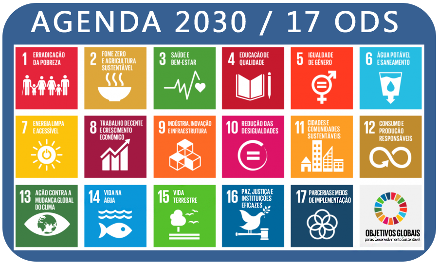
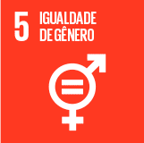

Agenda 2030
A Agenda 2030 é um plano de ação para as pessoas, para o planeta e para a prosperidade, que também busca fortalecer a paz universal com mais liberdade.

Sabendo disso trabalhamos com a ODS 5: igualdade de gênero

Violência e exploração sexual, desigualdade no acesso e à remuneração no mercado de trabalho, divisão desigual do cuidado não remunerado e do trabalho doméstico, e a discriminação no cargo público, permanecem enormes barreiras à igualdade de gênero.
Os ODS têm como objetivo garantir o fim da discriminação contra mulheres e meninas em todos os lugares até 2030. Dar à mulher direitos iguais aos recursos econômicos, como terra e propriedade, são metas vitais para a realização desse objetivo assim como garantir o acesso universal à saúde sexual e reprodutiva. A ODS 5 se desdobra em nove submetas que procuram envolver as dimensões mais relevantes desta questão, passando por temas como como violência, discriminação, reconhecimento do trabalho doméstico não remunerado, políticas de redução das desigualdades de gênero, entre outros. Sendo elas:
- Acabar com todas as formas de discriminação contra todas as mulheres e meninas em toda parte;
- Eliminar todas as formas de violência contra todas as mulheres e meninas nas esferas públicas e privadas;
- Eliminar todas as práticas nocivas, como os casamentos prematuros;
- Reconhecer e valorizar o trabalho de assistência e doméstico não remunerado;
- Garantir a participação plena e efetiva das mulheres e a igualdade de oportunidades para a liderança;
- Assegurar o acesso universal à saúde sexual e reprodutiva e os direitos reprodutivos;
- Realizar reformas para dar às mulheres direitos iguais aos recursos econômicos, bem como o acesso à propriedade e controle sobre a terra;
- Aumentar o uso de tecnologias de base, em particular as tecnologias de informação e comunicação, para promover o empoderamento das mulheres;
- Adotar e fortalecer políticas sólidas e legislação aplicável para a promoção da igualdade de gênero e o empoderamento de todas as mulheres e meninas.
Como a desigualdade de gênero afeta a sociedade?
Qualquer forma de desigualdade afeta a sociedade. Desigualdades sociais, raciais e de gênero afetam profundamente as relações sociais e impedem um traço imperativo das revoluções sociais modernas que prezam pela liberdade, pela igualdade, pela democracia e pela garantia de direitos. Como uma sociedade pode ser democrática se não há tratamento igual entre mulheres e homens. Mais profundo que igualdade é a equidade: como ter uma sociedade democrática sem respeitar as singularidades femininas.
Pode parecer que os resultados negativos da desigualdade de gênero afetam somente as mulheres, mas eles prejudicam o conjunto da sociedade, cortam a liberdade de homens que desejem seguir em caminhos profissionais ou comportamentos que são classificados como femininos e impedem que mulheres ofereçam e desenvolvam seu potencial em diversas áreas do conhecimento e liderança que são classificadas como masculinas. Após o surgimento do feminismo, essa temática passou ser amplamente debatida e alguns avanços já aconteceram, mas ainda há uma longa jornada a ser percorrida rumo à equidade de gênero.
É preciso reconhecer o valor da mulher em nossa sociedade, que tem o mesmo peso e a mesma importância que o do homem. É preciso, acima de tudo, tratar a mulher com respeito e garantir a ela a equidade necessária para o seu pleno desenvolvimento social. Somente assim é possível ter-se uma sociedade amplamente democrática.
Quando uma sociedade privilegia uns e discrimina outros, há uma enorme perda nos aspectos sociais, políticos, intelectuais e econômicos. Imaginem quantos talentos desperdiçados nós perdemos por conta da dificuldade das mulheres em acessarem e manterem-se nos espaços científicos? Imaginem o quanto o mercado perde por não investir em mulheres talentosas, que poderiam desenvolver verdadeiras inovações nesse campo? Imaginem o quanto a sociedade perde por não ter uma quantidade significativa de gestoras e legisladoras que poderiam, quem sabe, promover uma verdadeira mudança política no Brasil.